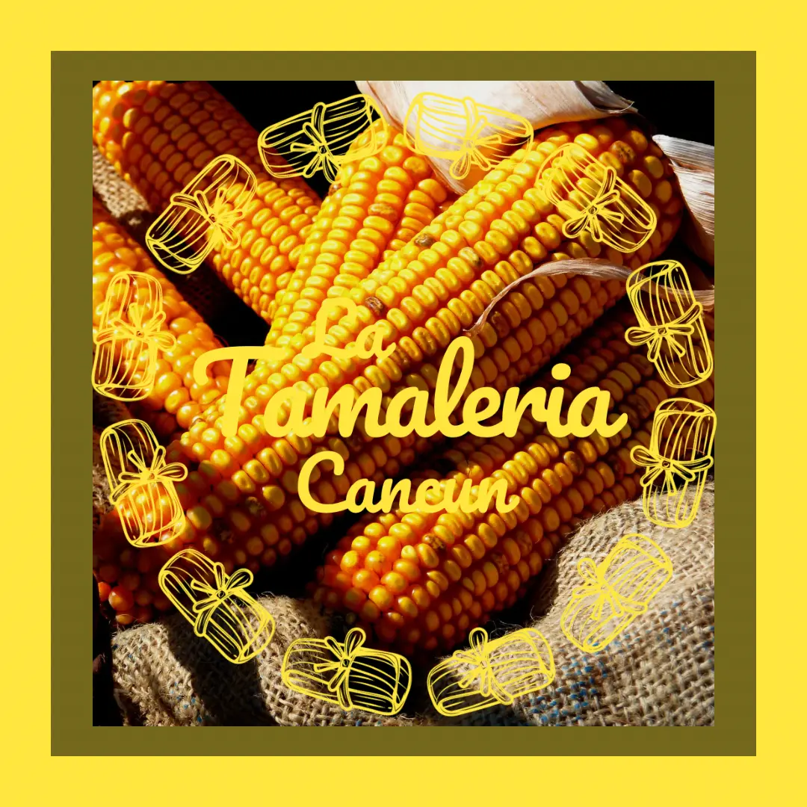

El Secreto del Maíz Nixtamalizado
El maíz nixtamalizado es un ingrediente esencial en la cocina mexicana, especialmente en la preparación de tamales. El proceso de nixtamalización es un método ancestral que ha sido transmitido de generación en generación. Este proceso no solo mejora el sabor del maíz, sino que también aumenta su valor nutricional.
En La Tamalería Cancún, mantenemos viva esta tradición y usamos maíz nixtamalizado de la más alta calidad para hacer nuestros tamales, una receta que se ha perfeccionado durante años. Al conocer el proceso del nixtamal, podrás entender cómo transforma los ingredientes simples en un platillo delicioso y nutritivo.
Te invitamos a explorar este proceso tradicional que forma parte de la riqueza cultural de México. En La Tamalería Cancún, nos enorgullece ofrecerte los mejores tamales hechos con este maíz, preparado con cariño y autenticidad.